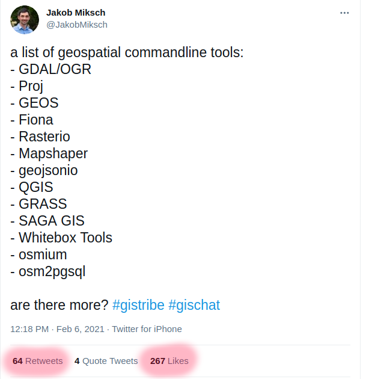
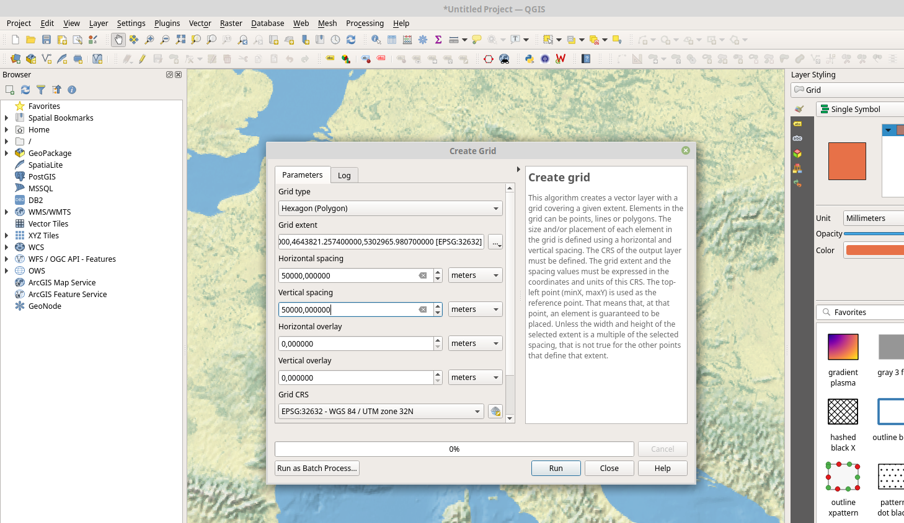
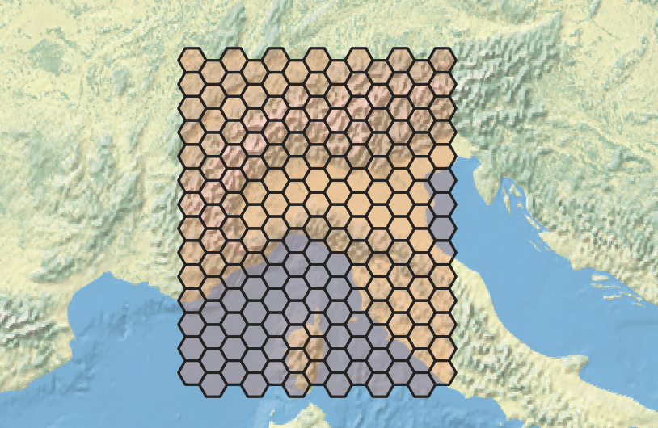
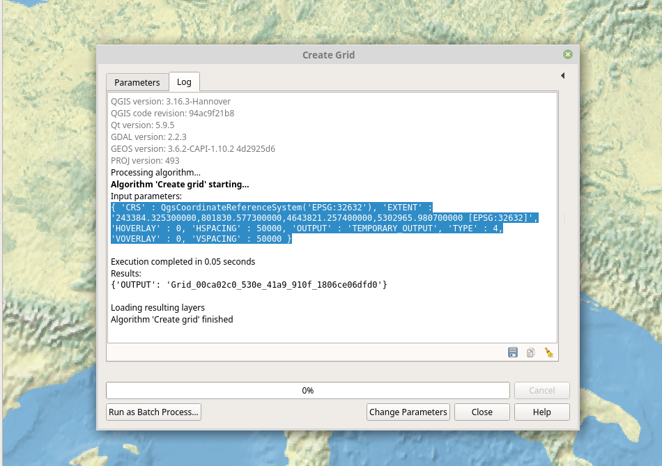

GIS mit der Kommandozeile
Jakob Miksch
meggsimum - Büro für Geoinformatik
FOSSGIS 2021, Rapperswil, 08.06.2021
meggsimum
- meggsimum.de
- Dienstleistungen im Bereich GIS, Webmapping & GDI
- Maßgeschneiderte WebGIS-Lösungen
- Softwarekonzepte und Softwareentwicklung
- Geodaten
- Beratung und Schulung
Warum?
Warum?
- reproduzierbar
- leichtgewichtig
- zeitlos
GDAL/OGR
fiona (OGR) & rasterio (GDAL)
- Wrapper für GDAL/OGR
- Python
- einfache Bedienung
fiona
Das Äquivalent zu OGRfiona
Formate- CSV
- Shapefile
- GeoPackage
- GPX
- GeoJSON
fiona
Usage: fio [OPTIONS] COMMAND [ARGS]...
Fiona command line interface.
Options:
-v, --verbose Increase verbosity.
-q, --quiet Decrease verbosity.
--aws-profile TEXT Select a profile from the AWS credentials file
--aws-no-sign-requests Make requests anonymously
--aws-requester-pays Requester pays data transfer costs
--version Show the version and exit.
--gdal-version Show the version and exit.
--python-version Show the version and exit.
--help Show this message and exit.
Commands:
bounds Print the extent of GeoJSON objects
calc Calculate GeoJSON property by Python expression
cat Concatenate and print the features of datasets
collect Collect a sequence of features.
distrib Distribute features from a collection.
dump Dump a dataset to GeoJSON.
env Print information about the fio environment.
filter Filter GeoJSON features by python expression.
info Print information about a dataset.
insp Open a dataset and start an interpreter.
load Load GeoJSON to a dataset in another format.
ls List layers in a datasource.
rm Remove a datasource or an individual layer.
fio info
Informationen über Vektordaten
fio info chapters.json
{
"driver": "GeoJSON",
"schema": {
"properties": {
"location": "str",
"title": "str",
"twitter": "str",
"website": "str",
"meetup": "str",
"comingSoon": "str",
"organizers": "str",
"moreInfo": "str",
"github": "str",
"facebook": "str"
},
"geometry": "Point"
},
"crs": "EPSG:4326",
"crs_wkt": "GEOGCS[\"WGS 84\",DATUM[\"WGS_1984\",SPHEROID[\"WGS 84\",6378137,298.257223563,AUTHORITY[\"EPSG\",\"7030\"]],AUTHORITY[\"EPSG\",\"6326\"]],PRIMEM[\"Greenwich\",0,AUTHORITY[\"EPSG\",\"8901\"]],UNIT[\"degree\",0.0174532925199433,AUTHORITY[\"EPSG\",\"9122\"]],AUTHORITY[\"EPSG\",\"4326\"]]",
"bounds": [
-149.9,
-43.53137589928477,
172.63572692871094,
69.682778
],
"name": "chapters",
"count": 114
} fio info
fio info --count shp/countries.shp
# 177
fio info --bounds shp/countries.shp
# -180.0 -90.0 180.00000000000006 83.64513000000001
fio info --crs chapters.json
# EPSG:4326
rasterio
Äquivalent zu GDAL
Usage: rio [OPTIONS] COMMAND [ARGS]...
Rasterio command line interface.
Options:
-v, --verbose Increase verbosity.
-q, --quiet Decrease verbosity.
--aws-profile TEXT Select a profile from the AWS credent
--aws-no-sign-requests Make requests anonymously
--aws-requester-pays Requester pays data transfer costs
--version Show the version and exit.
--gdal-version
Terms of Use
You can use the API for your project, but please be fair - extensive usage will be throttled. We do not guarantee for the availability and usage might be subject of change in the future.
Have fun with photon and make OSM grow!
Commands:
blocks Write dataset blocks as GeoJSON features.
bounds Write bounding boxes to stdout as GeoJSON.
calc Raster data calculator.
clip Clip a raster to given bounds.
convert Copy and convert raster dataset.
edit-info Edit dataset metadata.
env Print information about the Rasterio environment.
gcps Print ground control points as GeoJSON.
info Print information about a data file.
insp Open a data file and start an interpreter.
mask Mask in raster using features.
merge Merge a stack of raster datasets.
overview Construct overviews in an existing dataset.
rasterize Rasterize features.
rm Delete a dataset.
sample Sample a dataset.
shapes Write shapes extracted from bands or masks.
stack Stack a number of bands into a multiband dataset.
transform Transform coordinates.
warp Warp a raster dataset.
rio info
rio info europe.tif
{
"bounds": [
-19.1,
28.733333333000004,
45.866666667,
76.3
],
"colorinterp": [
"red",
"green",
"blue"
],
"count": 3,
"crs": "EPSG:4326",
"descriptions": [
null,
null,
null
],
"driver": "GTiff",
"dtype": "uint8",
"height": 1427,
"indexes": [
1,
2,
3
],
"interleave": "pixel",
"lnglat": [
13.383333333499998,
52.5166666665
],
"mask_flags": [
[
"all_valid"
],
[
"all_valid"
],
[
"all_valid"
]
],
"nodata": null,
"res": [
0.03333333333350436,
0.03333333333356692
],
"shape": [
1427,
1949
],
"tiled": false,
"transform": [
0.03333333333350436,
0,
-19.1,
0,
-0.03333333333356692,
76.3,
0,
0,
1
],
"units": [
null,
null,
null
],
"width": 1949
}
rio bounds
rio bounds europe.tif
{
"bbox": [
-19.1,
28.733333333000004,
45.866666667,
76.30000000000001
],
"geometry": {
"coordinates": [
[
[
-19.1,
28.733333333000004
],
[
45.866666667,
28.733333333000004
],
[
45.866666667,
76.30000000000001
],
[
-19.1,
76.30000000000001
],
[
-19.1,
28.733333333000004
]
]
],
"type": "Polygon"
},
"properties": {
"filename": "europe.tif",
"id": "0",
"title": "europe.tif"
},
"type": "Feature"
}
rio overview
rio overview europe.tif --build auto
rio overview --ls europe.tif
Overview factors:
Band 1: [2, 4, 8] (method: 'nearest')
Band 2: [2, 4, 8] (method: 'nearest')
Band 3: [2, 4, 8] (method: 'nearest')
JavaScript basiert
Mapshaper
Formate:- GeoJSON
- CSV
- Shapefile
- ...
Mapshaper
Usage: mapshaper - [options] ...
I/O commands
-i input one or more files
-o output edited content
Editing commands
-affine transform coordinates by shifting, scaling and rotating
-classify apply sequential or categorical classification
-clean fixes geometry issues, such as polygon overlaps and gaps
-clip use a polygon layer to clip another layer
-colorizer define a function to convert data values to color classes
-dissolve merge features within a layer
-dissolve2 merge adjacent polygons (repairs overlaps and gaps)
-divide divide lines by polygons, copy polygon data to lines
-dots fill polygons with dots of one or more colors
-drop delete layer(s) or elements within the target layer(s)
-each create/update/delete data fields using a JS expression
-erase use a polygon layer to erase another layer
-explode divide multi-part features into single-part features
-filter delete features using a JS expression
-filter-fields retain a subset of data fields
-filter-islands remove small detached polygon rings (islands)
-filter-slivers remove small polygon rings
-graticule create a graticule layer
-grid create a grid of square or hexagonal polygons
-inlay inscribe a polygon layer inside another polygon layer
-innerlines convert polygons to polylines along shared edges
-join join data records from a file or layer to a layer
-lines convert a polygon or point layer to a polyline layer
-merge-layers merge multiple layers into as few layers as possible
-mosaic convert a polygon layer with overlaps into a flat mosaic
-point-grid create a rectangular grid of points
-points create a point layer from a different layer type
-polygons convert polylines to polygons
-proj project your data (using Proj.4)
-rectangle create a rectangle from a bbox or target layer extent
-rectangles create a rectangle around each feature in a layer
-rename-fields rename data fields
-rename-layers assign new names to layers
-simplify simplify the geometry of polygon and polyline features
-snap snap together nearby vertices
-sort sort features using a JS expression
-split split a layer into single-feature or multi-feature layers
-split-on-grid split features into separate layers using a grid
-style set SVG style properties using JS or literal values
-target set active layer (or layers)
-union create a flat mosaic from two or more polygon layers
-uniq delete features with the same id as a previous feature
Experimental commands (may give unexpected results)
-cluster group polygons into compact clusters
-data-fill fill in missing values in a polygon layer
-include import JS data and functions for use in JS expressions
-fuzzy-join join points to polygons, with data fill and fuzzy match
-require require a Node module for use in -each expressions
-run create commands on-the-fly and run them
-shape create a polyline or polygon from coordinates
-subdivide recursively split a layer using a JS expression
Informational commands
-calc calculate statistics about the features in a layer
-colors print list of color scheme names
-encodings print list of supported text encodings (for .dbf import)
-help, -h print help; takes optional command name
-info print information about data layers
-inspect print information about a feature
-projections print list of supported projections
-quiet inhibit console messages
-verbose print verbose processing messages
-version, -v print mapshaper version
Enter mapshaper -help to view options for a single command
Mapshaper
mapshaper chapters.json -info
[info]
==============================================
Layer: chapters
----------------------------------------------
Type: point
Records: 114
Bounds: -149.9,-43.53137589928477,172.63572692871094,69.682778
CRS: +proj=longlat +datum=WGS84
Source: chapters.json
Attribute data
------------+---------------------------------
Field | First value
------------+---------------------------------
comingSoon | true
facebook | undefined
github | undefined
location | 'Paris, France'
meetup | ''
moreInfo | null
organizers | [{"name":"nerik","twitter":""}]
title | 'MaptimeParis'
twitter | ''
website | 'http://maptime.io/paris/'
------------+---------------------------------
Mapshaper
Umwandlung Format
mapshaper chapters.json -o chapters.shp
Mapshaper
- Braucht nur JavaScript
- kein GDAL/OGR nötig
Deskop GIS Automatisieren
- QGIS - qgis_process
- GRASS GIS
- SAGA GIS
qgis_process
qgis_process
qgis_process
qgis_process run native:creategrid \
--EXTENT='243384.325300000,801830.577300000,4643821.257400000,5302965.980700000 [EPSG:32632]' \
--TYPE=4 \
--HSPACING=50000 \
--VSPACING=50000 \
--CRS='EPSG:32632' \
--OUTPUT='qgis-hex2.geojson'
qgis_process
qgis_process
- geht mit allen Processing-Tools
- auch mit eigenen und Plugins
Schnittstellen (APIs)
- GeoCoding
- Routenplanung
GeoCoding mit Photon
curl 'https://photon.komoot.io/api/?q=rapperswil' \
> rapperswil.geojson
{
"features": [
{
"geometry": {
"coordinates": [
8.8245459,
47.2269198
],
"type": "Point"
},
"type": "Feature",
"properties": {
"osm_id": 240062727,
"osm_type": "N",
"country": "Schweiz/Suisse/Svizzera/Svizra",
"osm_key": "place",
"city": "Rapperswil-Jona",
"countrycode": "CH",
"osm_value": "town",
"postcode": "8640",
"name": "Rapperswil",
"county": "Wahlkreis See-Gaster",
"state": "Sankt Gallen",
"type": "district"
}
},
{
"geometry": {
"coordinates": [
8.815640768301005,
47.2273187
],
"type": "Point"
},
"type": "Feature",
"properties": {
"osm_id": 417258377,
"extent": [
8.8153123,
47.2275216,
8.8159567,
47.2271274
],
"country": "Schweiz/Suisse/Svizzera/Svizra",
"city": "Rapperswil",
"countrycode": "CH",
"postcode": "8640",
"county": "Wahlkreis See-Gaster",
"type": "house",
"osm_type": "W",
"osm_key": "historic",
"street": "Lindenhügel",
"district": "Rapperswil",
"osm_value": "castle",
"name": "Schloss Rapperswil",
"state": "Sankt Gallen"
}
},
{
"geometry": {
"coordinates": [
8.8156217,
47.2272484
],
"type": "Point"
},
"type": "Feature",
"properties": {
"osm_id": 4192210341,
"country": "Schweiz/Suisse/Svizzera/Svizra",
"city": "Rapperswil-Jona",
"countrycode": "CH",
"postcode": "8640",
"county": "Wahlkreis See-Gaster",
"type": "house",
"osm_type": "N",
"osm_key": "tourism",
"street": "Hauptplatz",
"district": "Rapperswil",
"osm_value": "museum",
"name": "Polenmuseum",
"state": "Sankt Gallen"
}
}
],
"type": "FeatureCollection"
}
Umwandlung in CSV
mapshaper \
-i rapperswil.geojson \
-o rapperswil.csv
Weitere Programme
Links
Impressum
Autor
Jakob Miksch
meggsimum - Büro für Geoinformatik (Christian Mayer)
Schillerstraße 2a
67122 Mutterstadt
info@meggsimum.de
meggsimum - Büro für Geoinformatik (Christian Mayer)
Schillerstraße 2a
67122 Mutterstadt
info@meggsimum.de
Lizenz
Diese Folien sind unter CC BY-SA veröffentlicht.